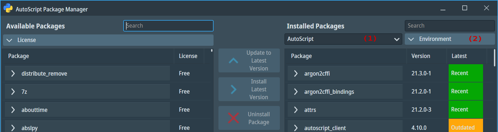
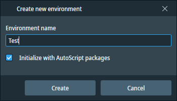

In this chapter, we elaborate on the methods for creating and removing virtual environments within the Python distribution included with AutoScript.
The recommended method for managing virtual environments is to use the Enthought Deployment Manager (EDM) tool. It offers a variety of built-in functions tailored for this task. While other popular managers like Venv, virtualenv, Pipenv, or Poetry exist, they may not consistently deliver reliable results across all scenarios when used with the Enthought-based Python distribution.
The AutoScript installation creates a default environment named AutoScript that contains all necessary packages and some common scientific libraries. However, this environment is deleted and re-created with each AutoScript upgrade, so any additional packages or modifications are lost. Therefore, it is recommended to create a new environment for working with AutoScript.
The Python version of the environment cannot be changed after creation. If a Python upgrade is needed, a new environment must be created. The AutoScript Package Manager always creates environments with the current AutoScript Python version (3.11).
There are two options for managing environments:
Example 1: Create a new environment "Test" and initialize it with AutoScript packages.
Launch the Package Manager from the Start menu Thermo Scientific AutoScript AutoScript Package Manager.
On startup, the application scans the available and installed packages. The name of the active environment is displayed in the drop-down box (1).

Click on the Environment button (2) and choose Create Environment. A dialog box opens.

Enter the name of the environment and click on the Create button. The name of the environment must be unique, and it must be a valid file name supported by the file system.
Check the 'Initialize with AutoScript packages' checkbox to install AutoScript client packages and all their dependencies into the newly created environment. This process may take some time, as the packages are downloaded from the Internet.
The environment has been created and set active. Note that the environment is only set active for the Package Manager, it is not a system-wide setting.
Example 2: Remove the "Test" environment.
Activate the "Test" environment by selecting it in the drop-down box (1).
Click on the Environment button (2) and choose Remove Environment. In the confirmation dialog, press Yes.
Example 1: Create a new environment "Test" and initialize it with AutoScript packages. Follow these steps in the AutoScript EDM Shell prompt:
Create the new environment:
edm env create Test --version 3.11
Activate the new environment:
edm shell -e Test
Initialize the environment with minimum mandatory dependencies of the AutoScript client packages:
edm install colorama numpy pillow_simd opencv_python matplotlib
Install the AutoScript client packages using pip. The AutoScript client packages are provided in the form of *.whl (wheel) packages. The files are placed in the product installation directory under c:\Program Files\Thermo Scientific AutoScript\PythonPackages.
pip install "c:\Program Files\Thermo Scientific AutoScript\PythonPackages\*.whl"
Example 2: Remove the "Test" environment.
Activate the "AutoScript" environment:
edm shell -e AutoScript
Delete the "Test" environment:
edm env remove Test